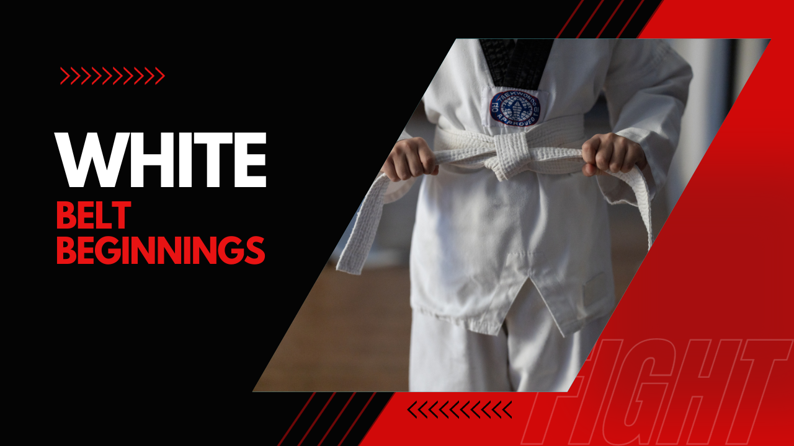

White Belt Beginnings
The early days as a white belt were a blend of exhilaration and trepidation. I learned the fundamental stances, blocks, and strikes, each movement a step towards mastery. Our master's patient guidance and unwavering belief in our potential instilled in us a sense of confidence, even when our own abilities wavered.
With each passing class, I felt my body grow stronger, my mind more focused. Breaking through boards, mastering intricate forms, and sparring with opponents honed my reflexes and sharpened my mental acuity. The dojang became a second home, the mats a place of solace and challenge.
The white belt stage was a period of discovery. I remember the feeling of standing in a white uniform, trying to mimic the precise movements that our master has demonstrated. It was a mix of excitement and nervousness, knowing that I was embarking on a path that would challenge me physically and mentally. Each class brought new techniques to learn and master, and with each small achievement, I felt a growing sense of accomplishment.